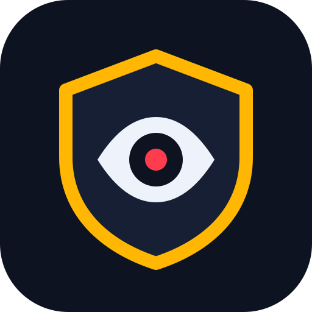

מצלמה שמתריעה לטלפון שלך כשמישהו מתקרב, עם צפייה חיה.
אין שרת ואין ענן. הווידאו, התמונות וההתראות עוברים ישירות ומוצפנים בין שני המכשירים ברשת ה-Wi-Fi המשותפת, ולא נשמרים בשום מקום.
טוען…
1. בטלפון שלך פתח את שומר ← „הטלפון שלי” וסרוק:
2. הפנה את הקוד שיופיע בטלפון אל העדשה של המכשיר הזה.
שומר פועל
הקש כדי להציג
1. כוון את המצלמה של הטלפון אל הקוד שעל המסך של מכשיר המצלמה.
2. עכשיו הפנה את המסך הזה אל העדשה של מכשיר המצלמה (בדרך כלל בגב שלו), במרחק של כ-20 ס״מ.
השאר את המסך הזה פתוח: הצליל וההתראות עובדים רק כשהוא מוצג. המסך לא ייכבה מעצמו.